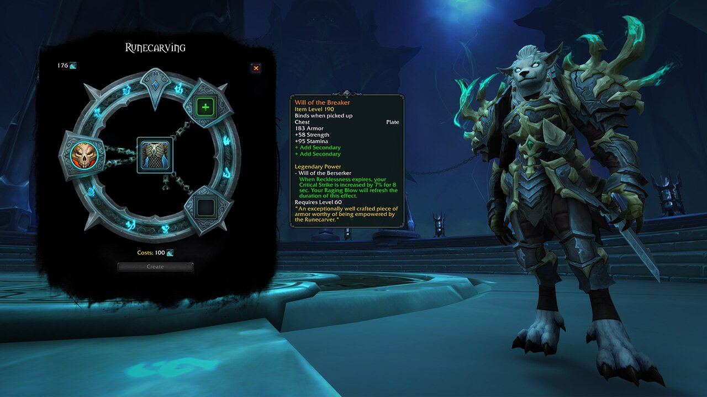

전설 장비는 여러 재료로 구성됩니다. 정확히는 어둠땅 제작 전설 기본 아이템, 두 개의 서신, 영혼 재, 룬조각사의 기억으로 이뤄져 있죠. 기본 아이템과 서신은 전문 기술로 만들 수 있고, 영혼 재는 토르가스트의 층을 소탕하여 얻습니다. 끝으로 룬조각사의 기억 제작법은 어둠땅의 다양한 콘텐츠를 통해 잠금 해제할 수 있답니다.
전설 아이템을 만들려면 우선 룬조각사가 강화할 방어구나 장신구류의 기본 아이템이 필요합니다. 재봉술, 가죽세공, 대장기술, 보석세공 전문 기술을 보유한 캐릭터는 룬조각사 이야기 전개를 진행하는 과정에서 기본 아이템 제작법을 받습니다. 기본 아이템은 플레이어가 만들어 거래하거나 경매장에서 구매하는 게 가능합니다. 기본 아이템을 만들 때마다 경험치를 얻으며 시간이 흐를수록 아이템 레벨이 높은 기본 아이템을 만들 수 있게 됩니다. 각 제작법에는 네 개의 레벨이 존재하는데, 높은 레벨의 기본 아이템일수록 완성하는 데 더 많은 재료가 필요합니다.
다음으로 두 개의 서신이 필요합니다. 서신은 전설 아이템에 내가 원하는 보조 능력치 두 가지를 부여하는 데 사용됩니다. 서신은 주문각인 전문 기술을 보유한 플레이어가 만들 수 있고, 거래하거나 경매장에서 판매하는 게 가능합니다. 토르가스트의 부정한 전당을 정복하면 영혼 재를 얻습니다. 영혼 재는 기본 아이템을 전설 품질에 걸맞은 걸작으로 단련하는 데 필요한 제작 재료입니다. 영혼 재는 매주 토르가스트 층을 소탕하고 얻을 수 있습니다. 매주 두 개의 구역에 진입할 수 있으니 잊지 말고 완료해 주세요. 굉장한 보상이 여러분을 기다립니다! 끝으로 일명 능력이라고 불리는 룬조각사의 기억을 수집해 전설에 죽음의 힘을 주입해야 합니다. 기억은 공격대, 신화 쐐기돌 던전, 플레이어 간 전투 활동을 아우르는 다양한 콘텐츠를 수행하여 획득할 수 있습니다. 모험 안내서(단축키: Shift-J)를 열어 모든 능력과 획득 방법, 룬조각술을 사용할 수 있는 기본 아이템까지 하나도 놓치지 않고 확인하실 수 있습니다. 원본 크기로 보시려면 이미지를 클릭하세요. 이오나의 메아리는 플레이어와 3명의 아군 주위로 전령의 메아리를 보내 짧은 지속시간 동안 공격력과 치유량을 증가시키거나, 받는 피해를 감소시킵니다. 시간이 흐르면 결국 여러 개의 전설을 만들게 될 텐데요. 이전 확장팩과 마찬가지로 캐릭터에 장착할 수 있는 전설은 한 번에 한 개뿐이니 현명히 선택하셔야 합니다! 전설 아이템 능력과 제작 요구 조건은 아직 개발 중인 사항이니, worldofwarcraft.com을 주기적으로 확인해 최신 정보를 참조해 주시기 바랍니다.